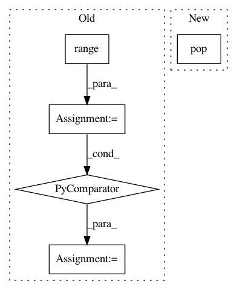

72e4750366e3cfb1ebd9f18d4d54ad1f49380928,pymc3/sampling.py,,_mp_sample,#,538
Before Change
chains = list(range(chain, chain + njobs))
pbars = [kwargs.pop("progressbar")] + [False] * (njobs - 1)
traces = Parallel(n_jobs=njobs)(delayed(_sample)(chain=chains[i],
progressbar=pbars[i],
random_seed=rseed[i],
start=start_vals[i],
**kwargs) for i in range(njobs))
return merge_traces(traces)
def stop_tuning(step):
After Change
chain = kwargs.pop("chain")
rseed = kwargs.pop("random_seed")
start = kwargs.pop("start")
chains = kwargs.pop("chains")
chain_nums = list(range(chain, chain + chains))
pbars = [kwargs.pop("progressbar")] + [False] * (chains - 1)
jobs = (delayed(_sample)(*args, **kwargs)
In pattern: SUPERPATTERN
Frequency: 3
Non-data size: 5
Instances
Project Name: pymc-devs/pymc3
Commit Name: 72e4750366e3cfb1ebd9f18d4d54ad1f49380928
Time: 2017-10-17
Author: aseyboldt@users.noreply.github.com
File Name: pymc3/sampling.py
Class Name:
Method Name: _mp_sample
Project Name: has2k1/plotnine
Commit Name: 09fb46dc98b3da44293a8f387bc848e3055c1947
Time: 2015-05-18
Author: has2k1@gmail.com
File Name: ggplot/geoms/geom_path.py
Class Name: geom_path
Method Name: draw
Project Name: keras-team/keras
Commit Name: 55447cbb3d33c2c209fdad8a1d53a166bc39544e
Time: 2016-08-09
Author: farizrahman4u@gmail.com
File Name: keras/backend/theano_backend.py
Class Name:
Method Name: squeeze